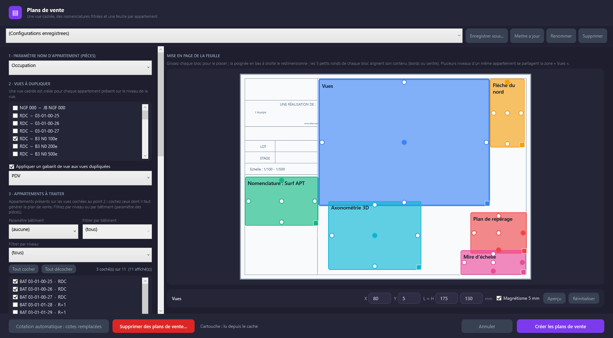
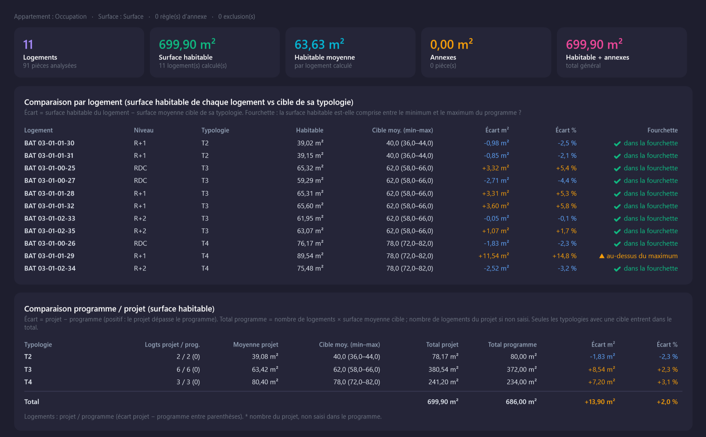
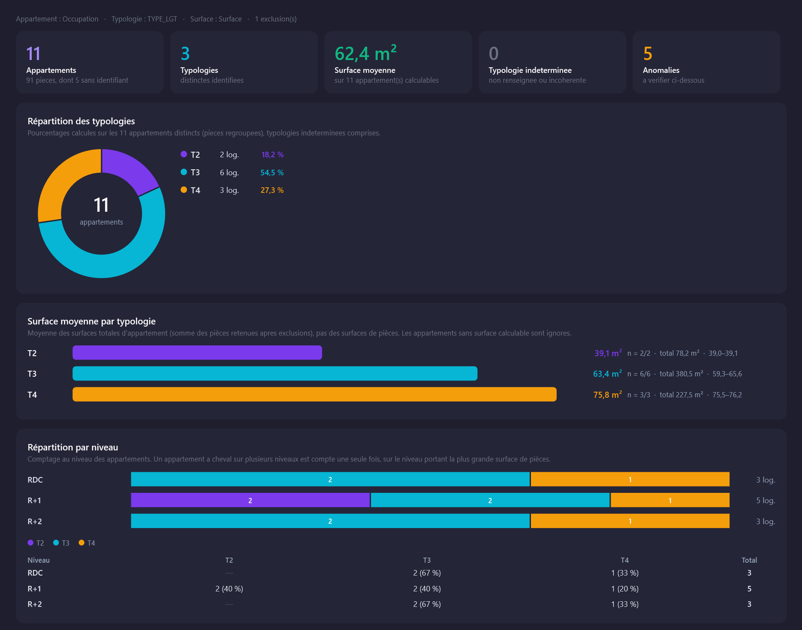
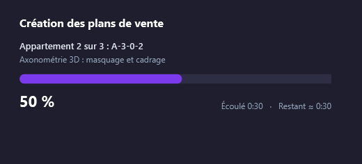
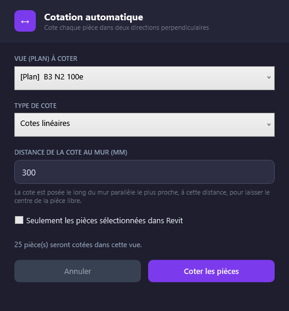
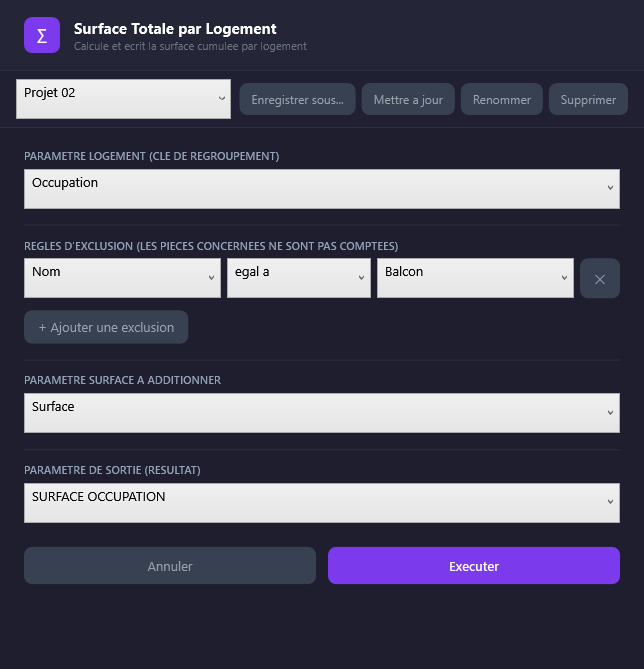
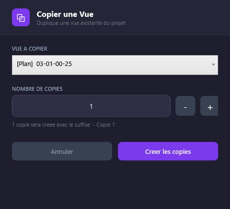

La conception de logements, sans les tâches répétitives.
Prismal automatise dans Revit le calcul des surfaces, l'analyse des typologies, le contrôle du programme, la cotation et la production des plans de vente.
Pour Revit 2027 · Développé par NEROMOROX

Vos pièces Revit sont la source de données.
Aucune convention imposée : les outils s'adaptent à vos projets, pas l'inverse.
Vos paramètres, vos règles
Vous choisissez dans l'interface les paramètres de votre projet. Les exclusions se définissent par règles : « Nom contient Balcon », par exemple.
Des configurations réutilisables
Enregistrez vos réglages sous un nom et rappelez-les d'un projet à l'autre. Les résultats d'analyse peuvent aussi être sauvegardés et rouverts.
Sûr pour votre modèle
Les outils d'analyse sont en lecture seule. Les autres demandent une confirmation et forment une seule opération annulable.
Six outils, un seul onglet dans Revit.
Chaque outil répond à une tâche précise de la conception de logements.
Conformité Programme
Compare le projet au programme : nombre de logements et surfaces par typologie, avec les écarts en m² et en %.
Lecture seuleEn savoir plus →Typologis
Analyse la composition du programme réalisé : combien de T1, T2, T3…, leurs surfaces, leurs niveaux, et les erreurs de saisie.
Lecture seuleEn savoir plus →Plans de vente
Crée une feuille complète par appartement : vue cadrée, nomenclatures, repérage, nord, échelle, cartouche et axonométrie 3D.
Crée vues et feuillesEn savoir plus →Cotation Auto
Cote automatiquement les pièces d'un plan : au moins deux cotes perpendiculaires par pièce, attachées aux faces des murs.
Pose des cotesEn savoir plus →Surface Logement
Calcule la surface totale des pièces de chaque logement et l'écrit dans un paramètre, prêt pour vos nomenclatures et étiquettes.
Écrit des paramètresEn savoir plus →Copier Vue
Duplique une vue existante autant de fois que nécessaire, en une seule opération annulable.
Crée des vuesEn savoir plus →Le projet respecte-t-il le programme ?
Comparez en un clic le nombre de logements et les surfaces habitables par typologie aux cibles de l'opération, et mesurez chaque écart.
- Écarts en m² et en % par typologie, et position de chaque logement dans la fourchette minimum – maximum.
- Annexes et exclusions par règles : balcons, caves, parkings, gaines… sans toucher à la surface habitable.
- Anomalies détectées et localisées dans Revit : logement hors fourchette, typologie absente, pièce sans appartement…
- Exports PDF et Excel, résultats enregistrables et réouvrables plus tard.

Capture de l'onglet Résultats de Conformité Programme (projet exemple, cibles de programme d'exemple).

Capture de l'onglet Résultats de Typologis (projet exemple).
Vos T1, T2, T3… d'un seul coup d'œil.
Connaissez la composition réelle du programme dans le modèle, et repérez les erreurs de saisie avant qu'elles n'arrivent aux plans.
- Répartition interactive des typologies, surface moyenne par typologie, répartition par niveau avec la liste des appartements au survol.
- Jamais de typologie devinée : des valeurs contradictoires dans un appartement le classent « indéterminée » et le signalent.
- « Afficher dans Revit » sélectionne les pièces d'une anomalie et zoome dessus.
- Exports PDF et Excel, résultats enregistrables et réouvrables.
Une feuille complète pour chaque appartement.
Produisez en quelques minutes les plans de vente de toute une opération, avec une mise en page identique pour chaque logement.
- Vues recadrées sur le contour réel de l'appartement, y compris en L ou en U.
- Nomenclatures filtrées, plan de repérage dans le bâtiment, flèche du nord orientée, mire d'échelle et cartouche.
- Axonométrie 3D facultative, isolée de l'appartement.
- Mise en page à la souris avec aperçu à l'échelle, magnétisme et alignement du contenu.
- Compléter ou supprimer : l'outil ne recrée que ce qui manque, et nettoie proprement un essai raté.

Les petits outils qui font gagner des heures.

Cotation Auto
Deux cotes perpendiculaires par pièce, attachées aux faces des murs, à la distance choisie : le centre de la pièce reste libre et les cotes suivent le modèle.

Surface Logement
La surface cumulée du logement est écrite, en m² arrondis à 2 décimales, dans chaque pièce, avec règles d'exclusion et conversion d'unités gérée.

Copier Vue
Choisissez la vue et le nombre de copies : elles sont créées d'un coup, nommées proprement, ou annulées en bloc en cas d'échec.
Un compte, une licence, les outils dont vous avez besoin.
Chaque outil est une licence : vous n'activez que ce qui sert à votre équipe.
Connexion
Depuis Revit, le bouton Connexion ouvre votre compte Prismal : connexion, création de compte, mot de passe oublié.
Activation
Activez la licence par une clé, ou faites une demande d'activation à l'équipe Prismal.
Fonctionne hors ligne
La licence est vérifiée hors ligne, avec une période de grâce de 3 jours après l'échéance sans connexion.
Gérée à plusieurs
Collaborateurs, postes, prolongations et suspensions se gèrent depuis la page d'administration.
Intéressé par Prismal ?
Laissez-nous vos coordonnées et dites-nous ce que vous cherchez à automatiser. Nous vous répondons personnellement.
- Une réponse rapide, sans engagement
- Démonstration sur vos propres projets
- Vos données ne servent qu'à vous répondre